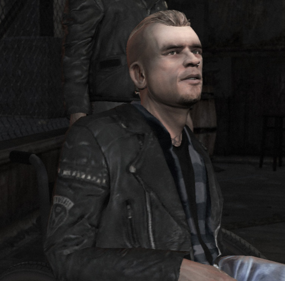
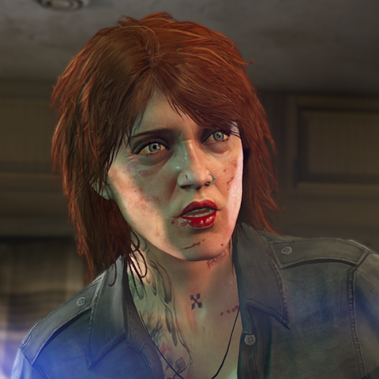
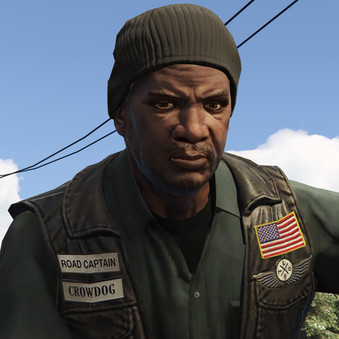
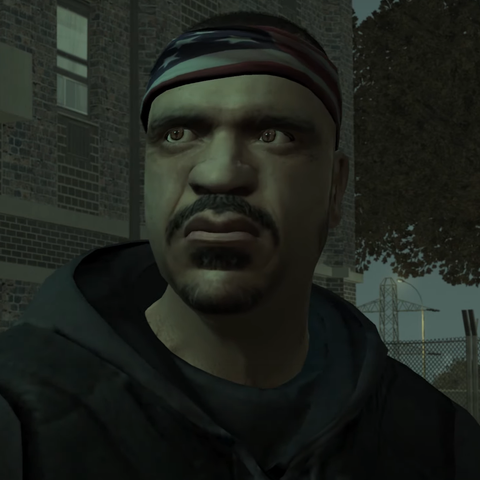
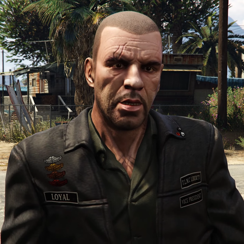
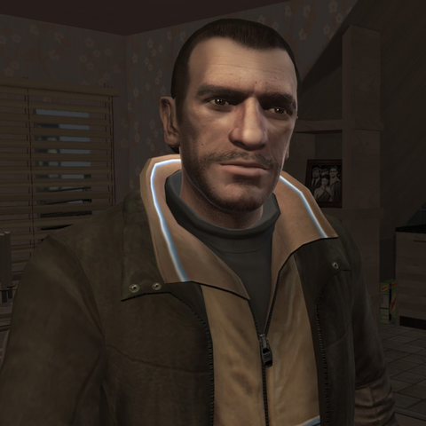
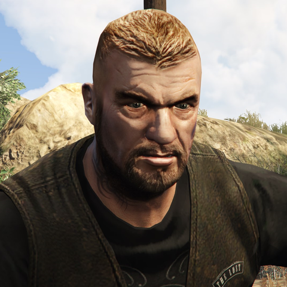
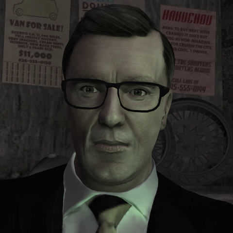

TLAD · 12 entries · partial
Characters — Grand Theft Auto IV: The Lost and Damned
Named characters with role, affiliations and a short summary.
Download characters.json Whole game bundle

Club memberAngus MartinWheelchair-bound club member and mechanic.

Johnny's exAshley ButlerJohnny's ex-girlfriend, struggling with addiction and tied to Billy.
 Club president, antagonistBilly Grey
Club president, antagonistBilly GreyThe Lost's unstable president, whose feud with the Angels of Death escalates everything.
 Club member, antagonistBrian Jeremy
Club member, antagonistBrian JeremyBilly loyalist who turns on Johnny after the leadership split.

Road captainClay SimonsThe club's road captain and Johnny's right hand.
 AssociateElizabeta Torres
AssociateElizabeta TorresBohan drug queenpin connected to the Lost's business.

Treasurer, allyJim FitzgeraldJohnny's most trusted club brother and the chapter's voice of reason.

ProtagonistJohnny KlebitzVice-president of the Lost MC's Liberty City chapter, trying to hold the club together.

Crossover characterNiko BellicAppears in shared scenes during the diamond storyline.
 AssociateRay Boccino
AssociateRay BoccinoThe mob contact who hires the Lost for diamond-related work.

Sergeant-at-armsTerry ThorpeHeavy weapons specialist and loyal club member.

PoliticianThomas StubbsCorrupt congressman who pays the Lost for dirty work.
| Image | Name | Role | Affiliations | Status |
|---|---|---|---|---|
| Angus Martin | Club member | The Lost MC | Alive | |
| Ashley Butler | Johnny's ex | The Lost MC | Alive | |
| Billy Grey | Club president, antagonist | The Lost MC | Varies |
| Brian Jeremy | Club member, antagonist | The Lost MC | Varies |
| Clay Simons | Road captain | The Lost MC | Alive | |
| Elizabeta Torres | Associate | Bohan drug trade | Alive |
| Jim Fitzgerald | Treasurer, ally | The Lost MC | Deceased | |
| Johnny Klebitz | Protagonist | The Lost MC | Varies | |
| Niko Bellic | Crossover character | Independent | Varies | |
| Ray Boccino | Associate | Pegorino Crime Family | Varies |
| Terry Thorpe | Sergeant-at-arms | The Lost MC | Alive | |
| Thomas Stubbs | Politician | Liberty City politics | Alive |
Field definitions
| Field | Type | Required | Notes |
|---|---|---|---|
name | string | yes | |
role | string | yes | |
affiliations | array | yes | array of strings |
status | string | no | |
summary | string | yes | |
first_appearance | string | no | |
image | string | null | no | |
verified | boolean | yes | |
source | string | no |